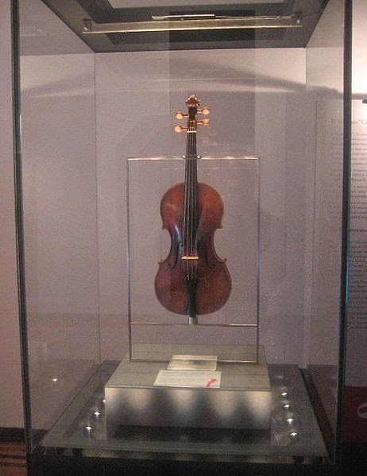

obras de paganini
violin solo
nusica de camara
para violin y orquesta
24 capricci op.1 M.S.25
sonata e violin solo
caproce D` adieu
capriccio a violin "nel cor piu non mi seto
god save the king per violin
sonata a violin solo
tema variato per violino
violin de paganini
